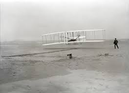
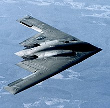

First Aerospace Post
The scene: Windswept sand dunes of Kill Devil Hills, 4 mi south of Kitty Hawk, North Carolina. The time: About 10:35 AM on Thursday, December 17, 1903. The characters: Orville and Wilbur Wright and five local witnesses. The action: Poised, ready to make history, is a flimsy, odd-looking machine, made from spruce and cloth in the form of two wings, one placed above the other, a horizontal elevator mounted on struts in front of the wings, and a double vertical rudder behind the wings . A 12-hp engine is mounted on the top surface of the bottom wing,slightly right of center. To the left of this engine lies a man-Orville Wright-prone on the bottom wing, facing into the brisk and cold December wind. Behind him rotate two ungainly looking airscrews (propellers), driven by two chain-and-pulley arrangements connected to the same engine. The machine begins to move along a 60-ft launching rail on level ground. Wilbur Wright runs along the right side of the machine, supporting the wing tip so it will not drag the sand. Near the end of the starting rail, the machine lifts into the air; at this moment,John Daniels of the Kill Devil Life Saving Station takes a photograph that preserves for all tiime the most historic moment in aviation history (see Fig. 1.2). The machine flies unevenly, rising suddenly to about 10ft, then ducking quickly toward the ground. This type of erratic flight continues for 12 s, when the machine darts to the sand, 120 ft from the point where it lifted from the
The scene: Windswept sand dunes of Kill Devil Hills, 4 mi south of Kitty Hawk, North Carolina. The time: About 10:35 AM on Thursday, December 17, 1903. The characters: Orville and Wilbur Wright and five local witnesses. The action: Poised, ready to make history, is a flimsy, odd-looking machine, made from spruce and cloth in the form of two wings, one placed above the other, a horizontal elevator mounted on struts in front of the wings, and a double vertical rudder behind the wings . A 12-hp engine is mounted on the top surface of the bottom wing,slightly right of center. To the left of this engine lies a man-Orville Wright-prone on the bottom wing, facing into the brisk and cold December wind. Behind him rotate two ungainly looking airscrews (propellers), driven by two chain-and-pulley arrangements connected to the same engine. The machine begins to move along a 60-ft launching rail on level ground. Wilbur Wright runs along the right side of the machine, supporting the wing tip so it will not drag the sand. Near the end of the starting rail, the machine lifts into the air; at this moment,John Daniels of the Kill Devil Life Saving Station takes a photograph that preserves for all tiime the most historic moment in aviation history (see Fig. 1.2). The machine flies unevenly, rising suddenly to about 10ft, then ducking quickly toward the ground. This type of erratic flight continues for 12 s, when the machine darts to the sand, 120 ft from the point where it lifted from the
